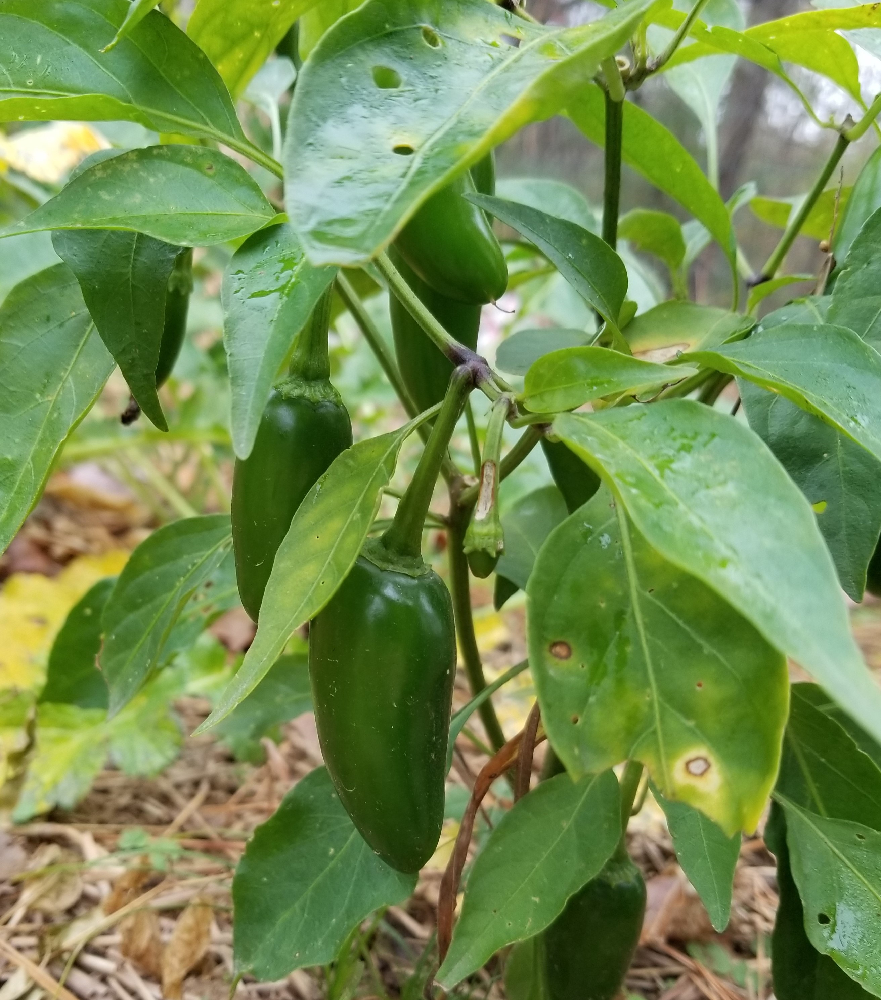

Outcome: Very sweet! They are delicious raw directly off the vine. No cooking is necessary.
Notes for next year: These are delicious. Plant as early as possible and plant as many as possible. It can be grown in spring as well. Get a better trellis next year. The plants like to sprawl.
Pepper - Jalapeño Early

Season: Started indoors in Februrary, transplanted in April, and harvested in summer.
Outcome: Only harvested one pumpkin. It is not as big as I would like.
Notes for next year: Pay attention to package suggestions on how much space a pumpkin needs! The vines need to spread. If the vines cannot spread, the pumpkins cannot grow very big. Next year, grow smaller varieties of pumpkins instead of this one.